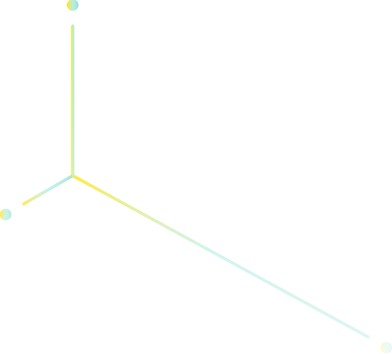

Everyoune is a pixel,
Everyoune is a pixel,
every pixel has a story to tell.
行動理念
那在哪裡可以遇到它呢？Pixelman會把它的表演帶到世界的街頭上，也許將會出現在你的城市，同時，Pixelman 想要用特別的照片或影片，幫大家把訊息傳遞給他們所愛的人，這些訊息對它來說十分重要，因為它相信每個訊息的背後都有一個美麗的故事，而這些故事絕對值得分享給世界上的所有人，愛將會在我們分享好故事的同時，以「舞動」的方式傳遞下去。
Everyone is a pixel, and every pixel has a story to tell.....
設備介紹
-
01:
- 2491顆全身燈點 02:
- 未來黑盔甲 03:
- LED動畫視覺 04:
- 身體演奏：透過動作演奏音樂 05:
- 機械人聲：說與唱 06:
- 舞棍
如何支持我們
這樣的願景，需要靠各界夥伴協力才能達成
若您認同Pixelman的理念與計畫，歡迎透過以下行動參與我們，一起加入Pixelman的行列
B快門相片
T-Shirt
表演諮詢